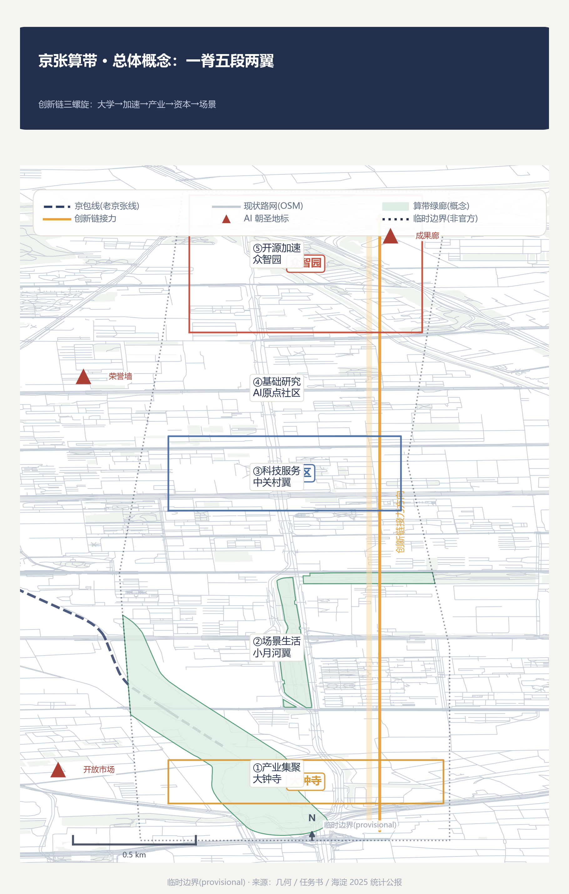
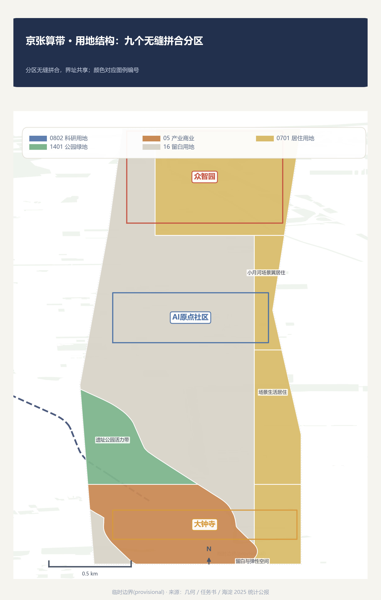
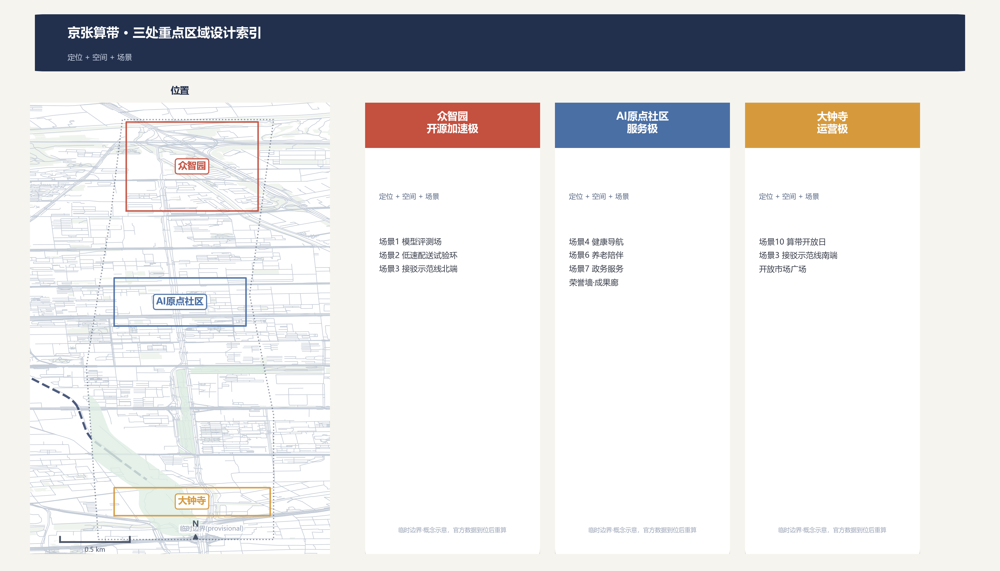
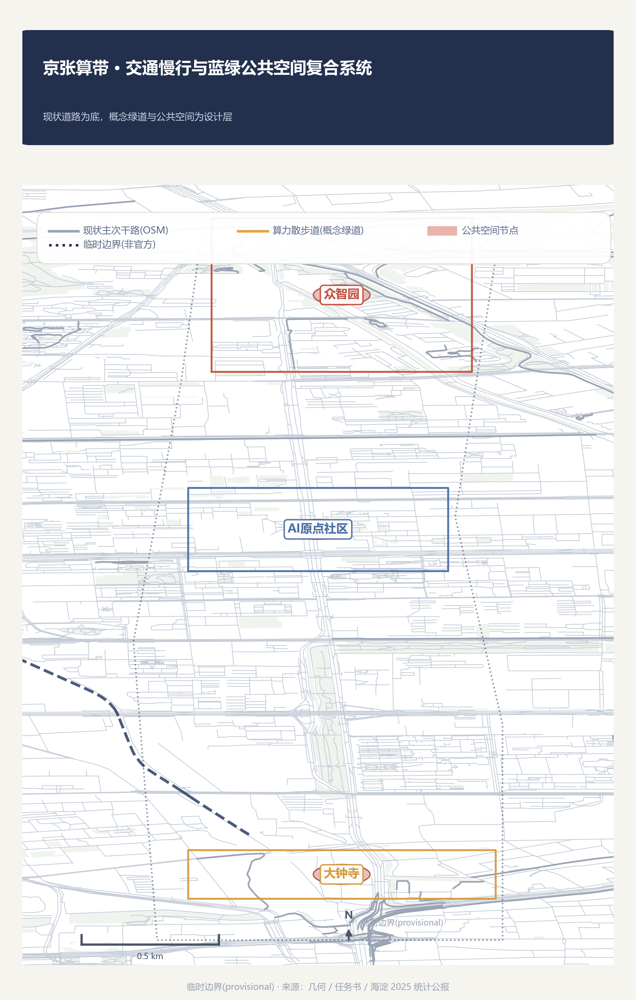
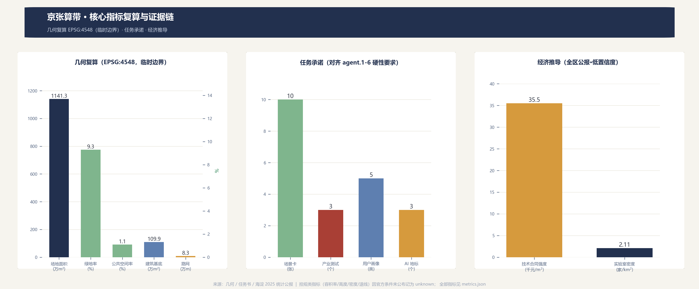

All geometry is provisional-rough: for concept display and content review only - not official redlines, regulatory controls, approvals, or engineering basis; regulatory metrics are unknown pending official conditions.
1141.3 ha
Site area (provisional)
9.3%
Green ratio (concept)
1.1%
Public-space ratio (concept)
1.099M m²
Building footprint (concept)
83 km
Road network (OSM+greenway)
10 / 3 / 5 / 3
Cards/tests/personas/landmarks
Self-check state：Self-check state: local four-gate validation passed (geometry/visual/bilingual/deterministic) · content production complete (v0.1) · provisional boundary · bilingual
Overview map: one spine, five stages, two wings

Land-use zones: nine seamless partitions

Key areas: three design index

Mobility and blue-green public space

Core metrics: recomputation and evidence chain

Three-Level Scope
| Level | Area | Scope |
|---|---|---|
| Coordinated research area | ~43.6 km² | Ecosystem & future-city strategy: 3 positionings, 5 functions, 3+2 layout, 8 cases, naming |
| Overall design area | ~11.4 km² | Five-stage relay, land-use zones, blue-green space, phasing |
| Key detailed-design area | ~3.684 km² | Zhongzhiyuan validation, AI Origin service, Dazhongsi operation |
AI scenarios (10, incl. 3 industry tests)
| # | Scenario | Location | Type |
|---|---|---|---|
| 1 | Open model evaluation field | Zhongzhiyuan | Industry test |
| 2 | Low-speed robot delivery test ring | Zhongzhiyuan | Industry test |
| 3 | Autonomous shuttle demo line | Corridor-Dazhongsi | Industry test |
| 4 | AI+health service navigation | XiaoYue River wing | Life service |
| 5 | AI+adaptive education classroom | College district | Education |
| 6 | AI+community elderly companion | Origin Community | Community service |
| 7 | AI+civic service counter | Zhongguancun wing | Public service |
| 8 | Compute Walk cultural guide | Heritage park belt | Culture |
| 9 | Honor wall + achievement gallery | Origin Community | Landmark |
| 10 | Compute Belt Open Day | Dazhongsi | Operation |
Renewal Projects and Phasing
| Phase | Scope | Logic |
|---|---|---|
| Phase 1 | AI Origin & heritage core | Prove services trustworthy first |
| Phase 2 | Zhongzhiyuan & north | Then prove trials controllable |
| Phase 3 | Dazhongsi & southern wings | Finally prove operations sustainable |
Task Coverage (agent.1-6)
| ID | Task | Response |
|---|---|---|
| agent.1 | Concept/naming/visual | Compute Belt naming system + herringbone x bus logo direction |
| agent.2 | Global AI ecosystem | 8 global cases (mechanisms only) + triple-helix argument |
| agent.3 | AI+ scenarios | 10 scenario cards (incl. 3 industry tests) |
| agent.4 | Public space & AI landmarks | Compute Walk, achievement gallery, honor wall, open market |
| agent.5 | Cultural narrative | Rail x Zhongguancun x AI three-line narrative |
| agent.6 | Global events & operations | Compute Belt Open Day annual brand + developer community |
Assumptions
- All geometry is provisional-rough - not official redline/regulatory/approval/engineering basis
- Regulatory metrics (FAR/height/density/setback) unknown pending official conditions
- Naming link between Zhongzhiyuan and the Zhongzhi compute stack is an inference
- Economic metrics are district-bulletin derivations with low confidence
- Concept building envelopes are not existing or approved buildings